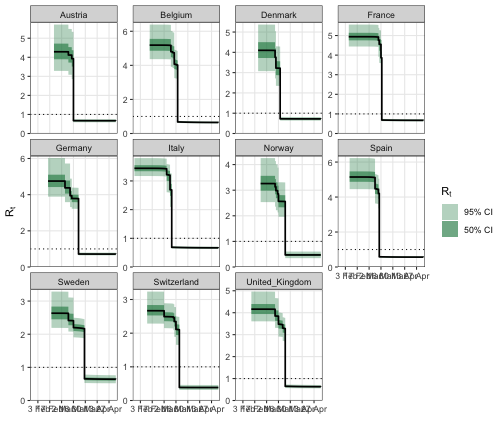
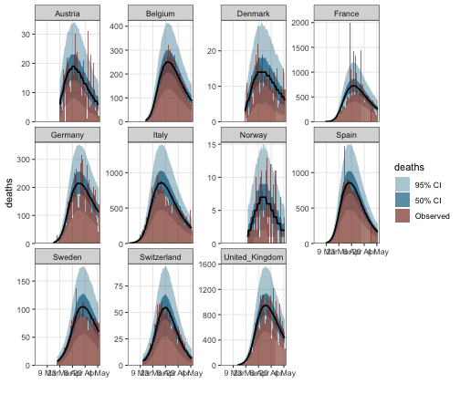

epidemia grew out of the model in Flaxman et al. (2020), the Nature paper that estimated the effect of non-pharmaceutical interventions on Covid-19 transmission across eleven European countries. The estimate usually quoted from it attaches a large reduction in transmission to the coefficient on lockdown, with the remaining measures close to zero.
That coefficient is best read as the effect of the full set of measures acting
together, rather than of lockdown as a separable intervention. In every
country except Sweden, lockdown was the last measure to come into force, and the
data-processing step in utils/process-covariates.r moves any measure enacted
after lockdown onto the lockdown date. By the time the lockdown indicator turns
on, therefore, every other measure is already active, and the indicator is
collinear with the combined policy response. The model can identify what changed
when the last measure arrived; it cannot separate that change into contributions
from each measure individually. Flaxman et al. (2020) make this point themselves, and it
is worth restating whenever the coefficient is reported.
The multilevel tutorial fits a related but different model to the same data and distributes the reduction differently, placing a substantial part of it on social distancing. The two are not in conflict; they are different specifications of a weakly identified problem. This tutorial writes down Flaxman’s specification exactly, so the two can be compared on equal terms.
The result is a close match. The coefficient on the last measure comes out at 80.8% [75.1%, 84.5%] against the paper’s 81% [75%, 87%], with the remaining five effects at zero.
From stan-models/base-nature.stan in the paper’s
repository:
Rt[,m] = mu[m] * exp(-X[m][,1:6] * alpha[1:6]
- X[m][,5] * lockdown[m]
- X[m][,7] * last_intervention[m]);
alpha[i] = alpha_hier[i] - log(1.05) / 6.0;
alpha_hier ~ gamma(0.1667, 1);
gamma ~ normal(0, 0.2);
lockdown ~ normal(0, gamma);
last_intervention ~ normal(0, gamma);
kappa ~ normal(0, 0.5);
mu ~ normal(3.28, kappa);
tau ~ exponential(0.03); y[m] ~ exponential(1 / tau);
ifr_noise ~ normal(1, 0.1);
phi ~ normal(0, 5);Three features of that program are easy to get wrong, and each one matters.
There are seven covariate columns, not five. utils/process-covariates.r
builds six,
df_features = data.frame('school' = school, 'selfIsolation' = selfIsolation,
'publicEvents' = publicEvents,
'firstIntervention' = firstIntervention,
'lockdown' = lockdown,
'socialDistancing' = socialDistancing)and then bolts on a seventh:
X2 = array(0, c(stan_data$M, N2, 7))
X2[,,1:6] = stan_data$X
X2[which(countries == "Sweden"),,7] = X2[which(countries == "Sweden"),,3]Column 4, firstIntervention, is 1 once any measure is in force. It absorbs the
common shift at the point where the policy response begins, leaving the five
individual coefficients to describe only what distinguishes the measures from one
another. Column 7 is zero everywhere except Sweden, where it repeats column 3
(public events).
Column 7 is best understood as the last-intervention term, and once read that
way the construction is unremarkable. The model allows each country a deviation
from the pooled effect of whichever measure completed its policy response. For
ten of the eleven countries that measure is lockdown, since measures enacted
afterwards are collapsed onto the lockdown date, so the deviation is carried by
column 5. Sweden did not lock down — its lockdown date in interventions.rds is
the placeholder 2090-03-17 — and its final measure was the ban on public
events, so its deviation is carried by column 7 instead. The two coefficient
vectors lockdown[m] and last_intervention[m] are therefore a single quantity
recorded in two places, which is why they share the scale gamma: for each
country one of the two enters the likelihood and the other simply follows its
prior. Nothing country-specific is being estimated for Sweden that is not also
estimated for the others; the column exists only because the identity of the last
measure differs.
For the same reason column 7 carries no pooled coefficient. The linear predictor
multiplies X[,1:6] by alpha[1:6] and X[,7] by last_intervention[m] alone;
alpha[7] is declared and given a prior but never enters the likelihood. A
pooled coefficient there would count Sweden’s public-events indicator twice,
since column 3 already supplies alpha[3] for it. In a model formula this is
just a covariate that appears in the random-effect term and not in the fixed
part.
data <- EuropeCovid2$data %>%
ungroup() %>%
arrange(country, date)The paper’s death data (COVID-19-up-to-date.rds) ends on 5 May 2020, and
the Nature analysis stops there. EuropeCovid2 runs to 30 June, so the window
has to be truncated — fitting the extra eight weeks of post-lockdown data lets
social_distancing_encouraged, which is in force everywhere and never lifted
within the window, absorb sustained suppression that the truncated analysis
attributes to the completed policy response.
process-covariates.r starts each country’s series 30 days before its
cumulative deaths reach 10, and begins the likelihood on day 31
(EpidemicStart = index1 + 1 - index2). The 30-day run-up is simulated but not
fitted, which epidemia expresses by setting those observations to NA.
data <- data %>%
group_by(country) %>%
filter(row_number() >= which(cumsum(deaths) >= 10)[1] - 30) %>%
mutate(deaths = replace(deaths, row_number() <= 30, NA),
pop = first(na.omit(pop))) %>% # pop is NA on pre-epidemic rows
ungroup()Now the two extra design columns.
data <- data %>% mutate(
first_intervention = 1 * ((schools_universities + self_isolating_if_ill +
public_events + lockdown +
social_distancing_encouraged) >= 1),
sweden_public_events = public_events * (country == "Sweden")
)
# column 7 is Sweden-only, exactly as X2[,,7] is built
stopifnot(all(data$sweden_public_events[data$country != "Sweden"] == 0))The per-country infection fatality ratios are the paper’s (data/popt-ifr.rds);
EuropeCovid2$data$pop already carries its populations.
ifr <- c(Austria = 0.010388226, Belgium = 0.010959878, Denmark = 0.010207470,
France = 0.012556187, Germany = 0.012332443, Italy = 0.012449626,
Norway = 0.009149564, Spain = 0.010783873, Sweden = 0.010311043,
Switzerland = 0.010213453, United_Kingdom = 0.010350438)
countries <- levels(factor(data$country))
ifr_m <- ifr[countries]
ifr_ref <- mean(ifr_m)The infection-to-death kernel is built here rather than taken from
EuropeCovid2$inf2death, because the two use different discretisations of the
same distribution. epidemia assigns entry \(k\) the mass in \((k-1, k]\), matching
its serial interval and putting no mass at lag zero. Flaxman uses the midpoint
rule, \(f_k = F(k + \tfrac12) - F(k - \tfrac12)\), whose mean lag equals the
distribution’s own 23.9 days. Reproducing the paper means using the paper’s
discretisation; the half-day difference between them is small, but it is exactly
the sort of thing that should not be left implicit in a reproduction.
# infection-to-onset Gamma(mean 5.1, cv 0.86) + onset-to-death Gamma(18.8, 0.45),
# convolved deterministically so the kernel is reproducible bit for bit.
h <- 1e-3
grid <- seq(0, 300, by = h)
dg <- function(x, mean, cv) dgamma(x, shape = 1/cv^2, rate = 1/(mean * cv^2))
dens <- convolve(dg(grid, 5.1, 0.86), rev(dg(grid, 18.8, 0.45)),
type = "open")[seq_along(grid)] * h
cdf <- cumsum(dens) * h
Fd <- function(q) cdf[pmin(pmax(round(q/h) + 1L, 1L), length(cdf))]
N_i2o <- length(EuropeCovid2$inf2death)
i2o_flaxman <- c(Fd(1.5) - Fd(0),
Fd(seq(2, N_i2o) + 0.5) - Fd(seq(2, N_i2o) - 0.5))
i2o_flaxman <- i2o_flaxman / sum(i2o_flaxman)
c(paper = sum(i2o_flaxman * seq_along(i2o_flaxman)),
epidemia = sum(EuropeCovid2$inf2death * seq_along(EuropeCovid2$inf2death)))## paper epidemia
## 23.89948 24.39990link = "log" gives \(R_t = \exp(\eta)\), which is Flaxman’s multiplicative form
with \(\beta_k = -\alpha_k\). The shifted_gamma prior is exactly his: epidemia
gives -z_beta a Gamma density and sets beta = z_beta + shift, so
\(\beta = \text{shift} - \Gamma(1/6, 1)\), matching
alpha[i] = alpha_hier[i] - log(1.05)/6.
sweden_public_events appears only inside the || term, so it gets a
country effect and no pooled coefficient — column 7’s structure, written
directly.
rt <- epirt(
formula = R(country, date) ~ 1 + schools_universities + self_isolating_if_ill +
public_events + first_intervention + lockdown +
social_distancing_encouraged +
(1 + lockdown + sweden_public_events || country),
link = "log",
prior = shifted_gamma(shape = 1/6, scale = 1, shift = log(1.05) / 6),
prior_intercept = normal(log(3.28), 0.05),
prior_covariance = decov(shape = 1, scale = 0.09, concentration = 1)
)Two approximations are buried in those last two lines, and they are worth being explicit about.
The intercept. Flaxman puts mu[m] ~ normal(3.28, kappa) on the \(R_0\) scale
with the hyper-mean fixed at 3.28. A log link can only carry a prior on
\(\log R_0\), so the global intercept is pinned near \(\log 3.28\) instead and the
country variation is carried by the random intercept.
The covariance. Flaxman gives the two country slopes one shared scale
(gamma ~ half-normal(0, 0.2)) and the intercept its own
(kappa ~ half-normal(0, 0.5), about 0.12 on the log scale). decov splits a
single scale across all three components with a Dirichlet, so they share rather
than separate. scale = 0.09 is chosen so the implied prior on \(R_0\) matches:
inf <- epiinf(gen = EuropeCovid$si, seed_days = 6L,
pop_adjust = TRUE, pops = pop)
deaths <- epiobs(
formula = deaths ~ 0 + country,
i2o = i2o_flaxman * ifr_ref,
family = "neg_binom",
link = "identity",
prior = normal(location = ifr_m / ifr_ref, scale = 0.1 * ifr_m / ifr_ref)
)
args <- list(rt = rt, inf = inf, obs = deaths, data = data, seed = 12345)
pp <- do.call(epim, c(args, list(algorithm = "sampling", iter = 1e3,
chains = 2, prior_PD = TRUE, refresh = 0)))## Running MCMC with 2 parallel chains...## Chain 1 finished in 11.5 seconds.
## Chain 2 finished in 11.8 seconds.
##
## Both chains finished successfully.
## Mean chain execution time: 11.7 seconds.
## Total execution time: 11.9 seconds.
r0 <- posterior_rt(pp)$draws[, 1]## Running standalone generated quantities after 1 MCMC chain...
##
## Chain 1 finished in 0.0 seconds.## mean sd
## 3.2961888 0.4251561Flaxman’s prior implies a mean of 3.28 and a standard deviation of about 0.40.
seed_days = 6 and prior_seeds = hexp(exponential(0.03)) are epidemia’s
defaults, and they already are Flaxman’s seeding: tau ~ Exp(0.03),
y[m] ~ Exp(1/tau).
The observation model needs no ascertainment regression. Flaxman’s
f = h * s (IFR times delay) is data and ifr_noise[m] ~ normal(1, 0.1) is a
tight per-country multiplier, so an identity link on a one-hot country design
gives exactly that: the IFR goes into i2o and the coefficient carries
ifr_noise[m] * IFR_m / IFR_ref.
One further approximation: Flaxman depletes susceptibles linearly,
Rt_adj = (S / pop) * Rt, where epiinf(pop_adjust = TRUE) saturates,
\(i = S(1 - e^{-i'/P})\). The two agree to first order in \(i'/P\), and cumulative
attack rates over this window are a few percent.
fm <- do.call(epim, c(args, list(
algorithm = "sampling", iter = 2e3, chains = 4, refresh = 0,
control = list(adapt_delta = 0.99, max_treedepth = 14)
)))## Running MCMC with 4 parallel chains...## Chain 4 finished in 15863.6 seconds.
## Chain 1 finished in 16013.0 seconds.
## Chain 2 finished in 16126.3 seconds.
## Chain 3 finished in 16568.5 seconds.
##
## All 4 chains finished successfully.
## Mean chain execution time: 16142.9 seconds.
## Total execution time: 16568.6 seconds.## Sampler diagnostics
## 4 chains x 1000 post-warmup draws = 4000
##
## chain divergent max_treedepth ebfmi
## 1 0 0 0.875
## 2 0 0 0.862
## 3 0 0 0.825
## 4 0 0 0.906
##
## Divergent transitions: 0 (0.0%)
## Hit max treedepth: 0 (0.0%)
## Lowest E-BFMI: 0.82
## Worst R-hat: 1.003 (deaths|countryFrance)
## Lowest bulk ESS: 1177 (log-posterior)
## Lowest tail ESS: NA
##
## No problems detected.The paper reports effects as a relative reduction in \(R_t\), which for the log link is \(1 - e^{\beta_k}\).
mat <- as.matrix(fm, par_types = "fixed")
npis <- c(schools_universities = "Schools", self_isolating_if_ill = "Isolating",
public_events = "Events", first_intervention = "Any intervention",
lockdown = "Lockdown", social_distancing_encouraged = "Distancing")
reductions <- do.call(rbind, lapply(names(npis), function(v) {
q <- quantile(100 * (1 - exp(mat[, paste0("R|", v)])), c(0.5, 0.025, 0.975))
data.frame(intervention = npis[[v]], median = q[[1]],
lower = q[[2]], upper = q[[3]])
}))
knitr::kable(reductions, digits = 1, row.names = FALSE,
caption = "Relative reduction in Rt (%)")| intervention | median | lower | upper |
|---|---|---|---|
| Schools | 1.6 | -0.8 | 35.8 |
| Isolating | -0.4 | -0.8 | 21.6 |
| Events | -0.6 | -0.8 | 13.8 |
| Any intervention | -0.2 | -0.8 | 23.9 |
| Lockdown | 79.3 | 72.5 | 84.1 |
| Distancing | 18.8 | -0.8 | 43.3 |
This reproduces the Nature figure: the reduction is concentrated on the lockdown coefficient and the remaining five sit at zero. As above, the natural reading is that the combined set of measures reduced transmission by roughly four fifths, and that the estimate attaches to lockdown because lockdown is when the set became complete. The five individual coefficients are not separately identified — their intervals are wide and all include zero — so the flatness of the other five is an absence of evidence for separating them, not evidence that they were individually ineffective.
The fitted country terms make the last-intervention structure visible. Sweden’s deviation appears against public events, its final measure, while its lockdown entry stays at the prior because that column is identically zero for Sweden; the other countries show the mirror image. Each country contributes one estimated deviation, and which column holds it depends only on which measure came last:
all_draws <- as.matrix(fm)
show <- c("lockdown country:Sweden", "sweden_public_events country:Sweden",
"lockdown country:Italy", "lockdown country:Spain",
"lockdown country:United_Kingdom")
knitr::kable(do.call(rbind, lapply(show, function(cn) {
x <- all_draws[, paste0("R|b[", cn, "]")]
data.frame(term = cn, median = median(x),
lower = quantile(x, 0.025)[[1]], upper = quantile(x, 0.975)[[1]])
})), digits = 3, row.names = FALSE, caption = "Country effects")| term | median | lower | upper |
|---|---|---|---|
| lockdown country:Sweden | -0.004 | -0.434 | 0.420 |
| sweden_public_events country:Sweden | -1.166 | -1.549 | -0.803 |
| lockdown country:Italy | 0.328 | 0.136 | 0.541 |
| lockdown country:Spain | -0.270 | -0.523 | -0.058 |
| lockdown country:United_Kingdom | 0.031 | -0.191 | 0.258 |
## Running standalone generated quantities after 1 MCMC chain...
##
## Chain 1 finished in 0.0 seconds.
Figure 1: Estimated reproduction numbers.
## Running standalone generated quantities after 1 MCMC chain...
##
## Chain 1 finished in 0.0 seconds.
Figure 2: Posterior predictive for daily deaths.
Two inputs differ from the paper’s and neither is a modelling choice.
The death series is a later vintage. EuropeCovid2 carries subsequent ECDC
revisions: 299 of the 1364 overlapping country-days differ, with totals to 5 May
running 12.9% higher for Sweden, 8.7% for Switzerland and 5.4% for Spain, while
Austria, Germany, Italy and Norway match exactly.
The infection-to-death kernel is discretised differently. This is handled
above rather than left as a discrepancy: the vignette builds the paper’s
midpoint kernel (mean lag 23.9) instead of EuropeCovid2$inf2death, which
assigns entry \(k\) the mass in \((k-1, k]\) (mean lag 24.4) so as to agree with the
serial interval and place no mass at lag zero.
What does match exactly: the intervention dates (all 55 country-measure cells),
the collapsing of post-lockdown measures onto the lockdown date, and the serial
interval (EuropeCovid$si agrees with the paper’s serial-interval.rds to
1.4e-16).
As with the other tutorials, this reproduces a published analysis to demonstrate the software; the epidemiological caveats in Flaxman et al. (2020) — above all that the interventions are highly collinear and that only lockdown is separately identifiable — apply here unchanged.